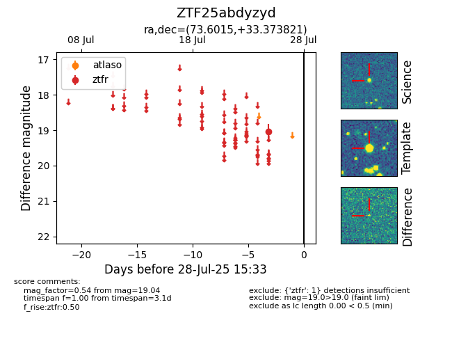

Target ZTF25abdyzyd at 2025-07-28 15:33, see:
FINK: fink-portal.org/ZTF25abdyzyd
Lasair: lasair-ztf.lsst.ac.uk/objects/ZTF25abdyzyd
ALeRCE: alerce.online/object/ZTF25abdyzyd
alt names
ZTF25abdyzyd (ztf,fink)
coordinates:
equatorial (ra, dec) = (73.6015,+33.37382)
galactic (l, b) = (170.0882,-6.45433)
photometry
last ztfr=19.04
1 ztfr detections
